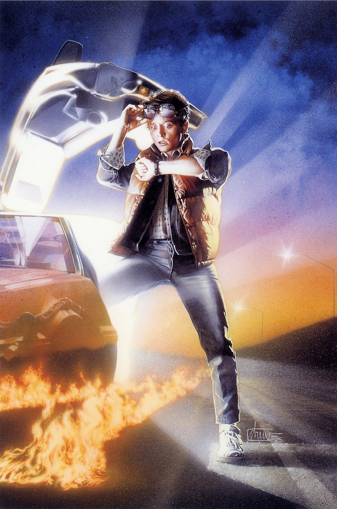

Назад в будущее
Материал из Википедии — свободной энциклопедии
Назад в будущее — американский научно-фантастический фильм режиссёра Роберта Земекиса. Сценарий написали Земекис и Боб Гейл, исполнительные продюсеры — Стивен Спилберг, Фрэнк Маршалл и Кэтлин Кеннеди. Главные роли исполнили Майкл Джей Фокс, Кристофер Ллойд, Лиа Томпсон, Криспин Гловер и Томас Ф. Уилсон. По сюжету, подросток Марти Макфлай случайно попадает из 1985 года в 1955, где мешает знакомству своих юных родителей.
Картина была задумана в 1980 году: несколько совместных работ Гейла и Земекиса обернулись провалами в коммерческом плане, около 40 студий отказались от «Назад в будущее», считая, что он не сможет конкурировать с популярными комедиями того времени. Земекис получил «зелёный свет» на постановку «Назад в будущее» благодаря успеху картины «Роман с камнем» 1984 года, которую он срежиссировал. Фокс был главным кандидатом на роль Марти, но он не мог сниматься из-за напряжённого рабочего графика. Тогда создатели взяли на роль Эрика Штольца. Вскоре после начала съёмок в ноябре 1984 года Земекис уволил Штольца, так как он не подходил на эту роль — режиссёр приложил максимум усилий, чтобы заполучить Фокса. На пересъёмки всех сцен ушло порядка $4 миллионов, дополнительно выделенных к бюджету. Съёмки проходили в Калифорнии и на студии «Universal», и завершились в апреле 1985. После замены Штольца дата премьеры была передвинута на 3 июля 1985, поэтому этап постпродакшена и работа над спецэффектами проходили в спешке.
Фильм стал самым коммерчески успешным фильмом года в мировом прокате, собрав более $381 миллиона, а также получил положительные отзывы критиков и зрителей: они оценили сюжет, лёгкую атмосферу комедии и актёрскую игру. Картина завоевала премию «Хьюго» за «Лучшую постановку», «Сатурн» за «Лучший фантастический фильм», «Оскар» за «Лучший монтаж звуковых эффектов»; а также получила три номинации на премию «Оскар», четыре номинации на «Золотой глобус» и пять номинаций на премию «BAFTA». Титульная песня «The Power of Love» группы Huey Lewis and the News также стала международным хитом.
С годами фильм получил культовый статус и стал одним из величайших представителей кинематографа 1980-х годов. В 2007 году Библиотека Конгресса США выбрала этот фильм для сохранения в Национальном реестре фильмов, а в июне 2008 года Американский институт киноискусства поставил его на 10-е место в списке лучших картин в жанре научной фантастики. Фильм положил начало трилогии «Назад в будущее», включающей продолжения «Назад в будущее 2» (1989) и «Назад в будущее 3» (1990), и франшизы, в которую вошли мультипликационный сериал, компьютерные и настольные игры, аттракционы, комиксы и документальные фильмы и др. В 2020 году в Лондоне состоялась премьера театрального мюзикла по мотивам первого фильма.